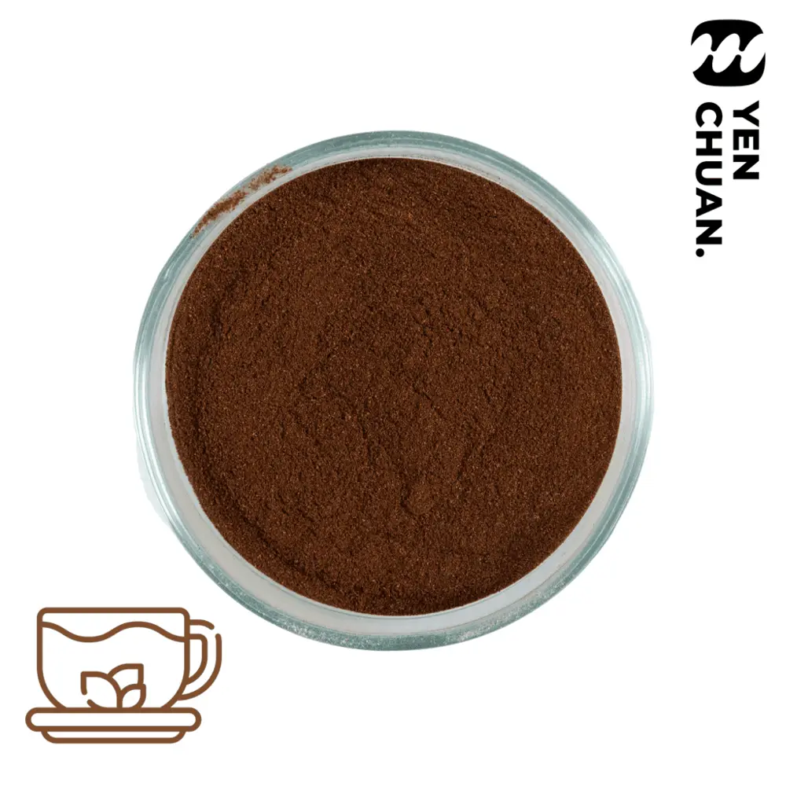

文章 / AI 示範文章
From idea to your own product: how custom flavour development works
這篇是英文原文，尚未完成繁體中文翻譯。中文選單與相關商品連結不會切回英文介面。
AI 撰寫示範，正式發布前仍須由沅川核可。

查看英文原文（尚未翻譯）
Many of our customers start with a simple idea: a flavour they tasted on holiday, a drink they want to be known for, or an ingredient with their own logo on the bag. Yen Chuan has an in-house lab and R&D team, so we can take that idea from first conversation to a product on your shelf.
What we can customise
- Flavour — the taste, aroma and texture of our powders and syrups can be adjusted.
- Branding — your logo printed on cups, holders, labels and more.
- New products — a completely new flavour or product developed with you.
The five steps
- Enquiry. Tell us what you have in mind and how you plan to sell it.
- Details. Our team confirms taste, texture, packaging and expected volume with you.
- Samples. We prepare samples in our lab for you to test, and adjust them based on your feedback.
- Quotation. Once the formula is agreed, you receive a quote based on the final recipe and order size.
- Order. We produce, pack (with your branding if needed) and ship.
What to prepare before you contact us
- A description or reference of the taste you want (a photo, a competitor product, or a drink you love).
- Where and how it will be sold: in your own shop, to other shops, or retail.
- Your expected monthly volume and target launch date.
- Your destination country, so we can check labelling and shipping early.
A clear brief helps the team understand what to test. Sample rounds and delivery timing are confirmed for each project.